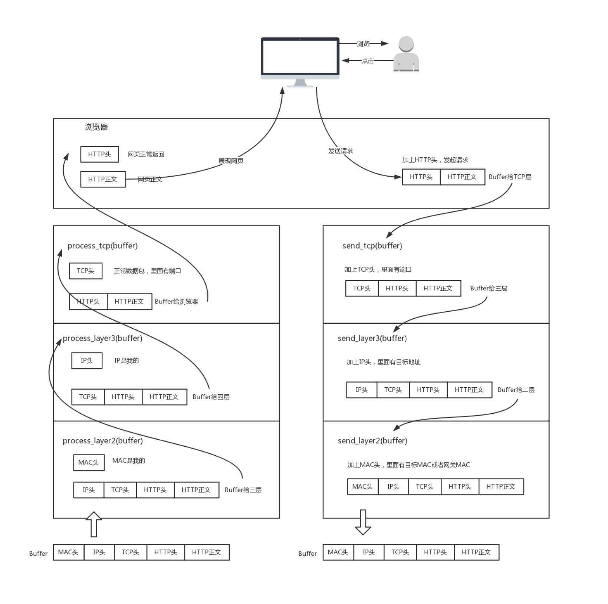

网络协议可以理解为机器之间的语言。为什么这么说？
比如计算机语言（如 C， Golang， Java），是人类与计算机之间沟通的协议，通过这种协议，计算机可以知道我们想让它做什么。但是这种协议计
算机不能直接读懂，对于计算机，它只认识 0 和 1，所以计算机语言还需要编译之后，计算机才会读懂。
计算机语言，能够教给一台计算机完成你的工作，但是，要想一大片机器互相协作、共同完成一件事，只教给一台机器做什么是不够的，你需要学会
给一大片机器做什么。这就需要网络协议。
互联网的每一层，都定义了很多协议。这些协议的总称，就叫做”互联网协议”（Internet Protocol Suite）。它们是互联网的核心，下面介绍每一层
的功能，主要就是介绍每一层的主要协议。
每一层都是为了完成一种功能。为了实现这些功能，就需要大家都遵守共同的规则。
大家都遵守的规则，就叫做”协议”（protocol）。
互联网的实现，分成好几层。每一层都有自己的功能，就像建筑物一样，每一层都靠下一层支持。
用户接触到的，只是最上面的一层，根本没有感觉到下面的层。要理解互联网，必须从最下层开始，自下而上理解每一层的功能。
如何分层有不同的模型，有的模型分七层，有的分四层。把互联网分成五层，应该比较容易解释。
越下面的层，越靠近硬件；越上面的层，越靠近用户。
平常所说的二层设备、三层设备，二层设备处理的通常是 MAC 层的东西。那如果发送一个 HTTP 的包，是在第七层工作的，需不需要经过二层设备？或者
即使经过了二层设备也不处理呢？
程序是如何工作的？

网络上跑的包，都是完整的。可以有下层没上层，绝对不可能有上层没下层。
例如：TCP 在三次握手的时候，TCP 发送每一个消息，都会带着 IP 层和 MAC 层。因为，TCP 每发送一个消息，IP 层和 MAC 层的所有机制都
要运行一遍。而你只看到 TCP 三次握手了，其实，IP 层和 MAC 层为此也忙活好久了。
所以，对 TCP 协议来说，三次握手也好，重试也好，只要想发出去包，就要有 IP 层和 MAC 层，不然是发不出去的。
所谓的二层设备、三层设备，都是这些设备上跑的程序不同而已。一个 HTTP 协议的包经过一个二层设备，二层设备收进去的是整个网络包。
这里面 HTTP、TCP、IP、MAC 都有。什么叫二层设备呀，就是只把 MAC 头摘下来，看看到底是丢弃、转发，还是自己留着。那什么叫三层设备呢？
就是把 MAC 头摘下来之后，再把 IP 头摘下来，看看到底是丢弃、转发，还是自己留着。
分层的本质是通过分离关注点而让复杂问题简单化，通过分层可以做到：